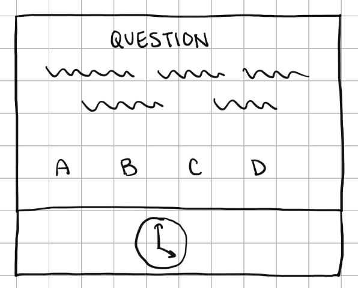
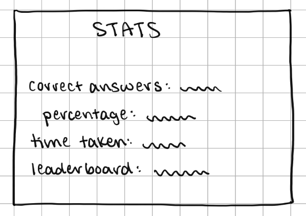
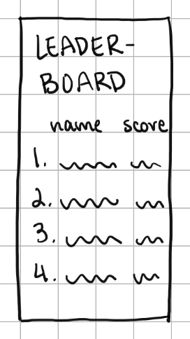
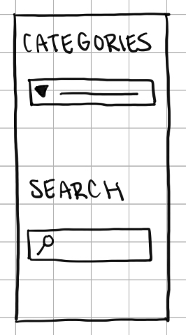

Team
James McGillicuddy
Role:Project Manager
I'm James, a CS major hoping to get
a job in Web Development or AI. I've always liked trivia and other
things like Jeopardy which inspired me to make this game! My goal is
that not only does this provide an example of our abilities, but
also serves as a place for people to learn and have a lot of fun!
Ethan Truong
Role:Front-end Dev
I am a CS major interested in Web Development.
My interests include piano and enjoy playing basketball with friends.
Ahmad Shahrour
Role:Back-end Dev
Hi, my name is Ahmad Shahrour, I am a
CS major with an interest in Quantitative finance and financial
modeling. I have some internship experience working as a software
engineer. Aside from that, I like to play sports and watch soccer.
Tisya Singh
Role:Documentation
Hi, my name is Tisya Singh and I’m a
Computer Science and Mathematics double major. I’m interested in
software development and have some experience with data management,
algorithmic design, and web development. In my personal time, I
enjoy listening to music and swimming.
Overview
Trivia fun is a web application aimed to foster an engaging and entertaining environment that allows people to challenge friends in testing each other's knowledge. With the immense amount of information available on the internet, it is a difficult task to navigate all the different things the world has to offer in terms of knowledge. Our web app quizzes users on various topics ranging from a bunch of different categories such as history, math, science, etc. Our trivia game is tasked to solve this problem by providing a structured and entertaining way to teach players new things by expanding their knowledge in a competitive environment. Our goal is to target trivia enthusiasts or anyone enjoying a friendly competition in hopes of expanding their knowledge in any specific topic. By offering a diverse number of categories to quiz people that vary in difficulty, we are able to cater to a broad audience in utilizing this web app. Ultimately, users will be able to quiz themselves individually or play with friends to compete on their knowledge.
Application Parts
Data Requirements
When designing any website, it's crucial to consider the various types of data that the application will handle, in our case a trivia site. From user profiles to quiz questions, each piece of data plays a significant role in providing an engaging and seamless experience for users. We want this not only to be a website that functions well, but beyond that a place for people to have fun and learn. That starts with a foundation of data management, so it is important to explore the top types of data that our trivia application will manage.
User Profiles
One of the primary data requirements for our trivia website is user profiles. Each user will have a unique profile containing information such as username, profile pictures and personal preferences. User profiles are essential for personalized experiences, tracking progress, and facilitating social interactions, such as adding friends or competing on leaderboards. We can also store data about a user's wishes for customization, so every user can have their own unique feel on our site.
Quiz Questions and Answers
The core content of our trivia website revolves around quiz questions and answers. These data points include the actual questions posed to users, multiple-choice options, correct answers, and any additional metadata such as difficulty level or category tags. Ensuring a diverse collection of questions is crucial for keeping users engaged and challenged. We would obviously have to make sure that we get data from reliable sources, citing where we get any specific information both to avoid any plagiarism and to allow users to explore more if they want. I imagine a way to handle this would just have a "Source" button when an answer is provided, and then the user can learn more on their own.
Categories and Tags
To enhance user experience and facilitate navigation, our trivia application will organize quiz questions and other content into categories and tags. Categories provide a broad classification of topics, such as history, science, or entertainment, while tags offer more specific descriptors, allowing users to filter content based on their interests. I'd imagine tags could be "United States History" or "Taylor Swift Song Lyrics". Properly structured categories and tags not only make it easier for users to find relevant quizzes and questions instead of just throwing an assortment of random questions at the user.
Leaderboard Data
Tracking user performance and displaying high scores is a key feature of our trivia website. It's one thing to quiz yourself, but adding the competitive aspect that trivia is known for. Leaderboard data includes user rankings based on various criteria, such as total points earned, accuracy rates, or completion times. In addition to individual rankings, the leaderboard may also feature global, regional, or friend-specific rankings to encourage competition and social interaction. Efficient data storage and retrieval mechanisms are important to ensure real-time updates and accurate representations of user achievements (if possible).
In conclusion, the success of our trivia website depends heavily on effectively managing various types of data. By prioritizing user profiles, quiz questions, categories, tags, and leaderboard data, we can create a dynamic and engaging platform that provides users with an enjoyable trivia experience while also facilitating social interaction and competition.
Wireframes
The questions wireframe will display the current question, its category, and answer choices, containing the information that is most important, as the user is in the process of playing, in an easy-to-read manner. It will also include a timer showing the remaining time along the bottom so the user can keep track of their speed.
The stats wireframe will appear after each completed round. It will display the number of questions answered correctly out of the total,overall percentage, and other statistics, providing the user with a sense of how well they performed in the round.
The leaderboard wireframe will display players’ rankings in a vertical list format, including their name and total score, adjusting each round. This provides the user with a sense of how they place amongst others, encouraging them to continue playing in hopes of achieving a higher placement.
The categories wireframe will contain an alphabetically ordered dropdown bar where the user can easily view all options before selecting their topic of preference. There will also be a search bar, making it quicker for the user to select a category, such as if they already know the category name, without having to go through all the options.
Real-World Connection
In an increasingly interconnected world, encouraging engagement and knowledge-sharing is crucial. Our trivia website addresses the need for accessible and enjoyable recreational activities while promoting learning and community interaction. Just like how social media platforms connect individuals globally, our website aims to create a virtual space where people can come together to test their knowledge, engage in friendly competition, and deepen their understanding of various topics. This would especially be the case for smaller friend groups or spaces. Consider the example of a group of friends gathering for a trivia night at a local bar. Especially in the context of our college town, these can be limited by timing, age, transportation, conflicts, etc. Our website transcends these limitations by providing an online platform where users can participate in trivia games anytime, anywhere. Whether it's a group of friends spread across different cities or strangers with shared interests, our website brings people together in a fun and educational way. Moreover, our trivia website can serve as a valuable educational tool, especially for students. There could be situations where teachers could use our site as a fun but educational tool. Additionally, users can explore new topics and expand their knowledge through trivia quizzes tailored to their interests. By leveraging technology to facilitate learning and social interaction, our trivia website contributes to the trivia-itch of our users that we all know we get, mayble teach some people a few things, and also hopefully create a community to bring people together.
Integrative Experience
The development of our trivia website will show for our education and collective personal experiences, using concepts that we as a group have all gained from various courses and reflecting our growth as students and developers. Throughout our coursework, we've gained expertise in web development, database management, and user experience design. Courses in programming languages, such as JavaScript and Python, provided us with the technical skills needed to build interactive features and implement game logic. Importantly, not all of us have taken the exact same course path, giving us all slightly different backgrounds akin to what you would see in a real-life job. Moreover, our personal experiences, including participation in things like trivia events and online gaming have inspired possible features and "visions" for our project. Drawing from these experiences, we understand the importance of fostering a sense of community and creating a platform that caters to diverse interests and preferences.